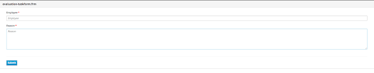
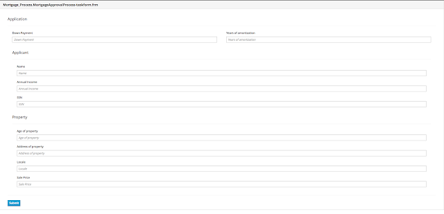
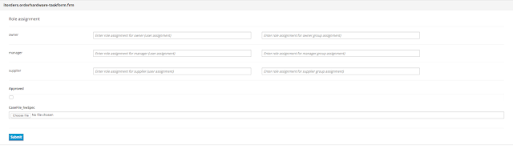
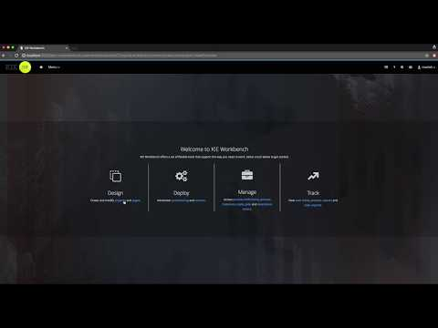
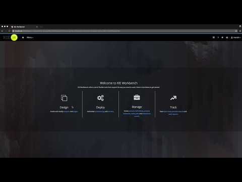
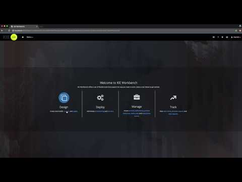
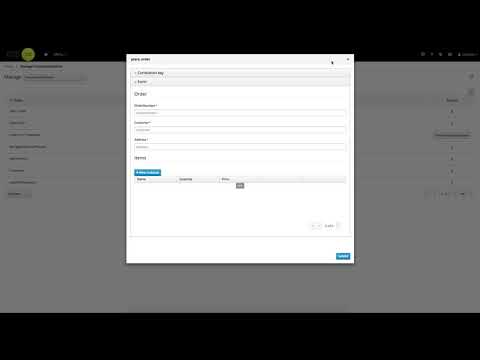

Let’s embed forms … rendered by KIE Server
One of the biggest advantages of using forms built in workbench is that they share the same life cycle as your business assets (processes and user tasks). By that they are versioned exactly the same way – so if you have another version of a process that requires more information to start you simply create new version of the project and make changes to both process definition and form. Once deployed you can start different versions of the process using dedicated forms.
Although to be able to take advantage of these forms users have to be logged into workbench as the only way to render the content is … through workbench itself. These days are now over … KIE Server provides pluggable renderers for forms created in workbench. That means you can solely interact with kie server to perform all the needed operations. So what does this brings:
- renders process forms – used to start new instances
- renders case forms – used to start new case instances – includes both data and role assignments
- renders user task forms – used to interact with user tasks – includes life cycle operations
 |
| Evaluation start process form |
 |
| Mortgage start process form |
 |
| IT Orders start case form |
- based on PatternFly – this is the default renderer that keeps the look and feel consistent with workbench
- based on Bootstrap
http://localhost:8080/kie-server/services/rest/server/containers/evaluation/forms/processes/evaluation/content
http://localhost:8080/kie-server/services/rest/server/containers/evaluation/forms/tasks/1/content
http://localhost:8080/kie-server/services/rest/server/containers/mortgage-process/forms/processes/Mortgage_Process.MortgageApprovalProcess/content
http://localhost:8080/kie-server/services/rest/server/containers/mortgage-process/forms/tasks/2/content
http://localhost:8080/kie-server/services/rest/server/containers/itorders/forms/cases/itorders.orderhardware/content
http://localhost:8080/kie-server/services/rest/server/containers/itorders/forms/tasks/3/content
And at the end few short screen casts showing this feature in action
Evaluation process

Mortgage process

IT Orders case

Multi Sub Form – dealing with list of items in forms

More technical information will be provided in the next article as this one is just a quick preview of what’s coming. Hope you like it and don’t forget to provide feedback!

{kind=link}
{kind=link}
{kind=link}